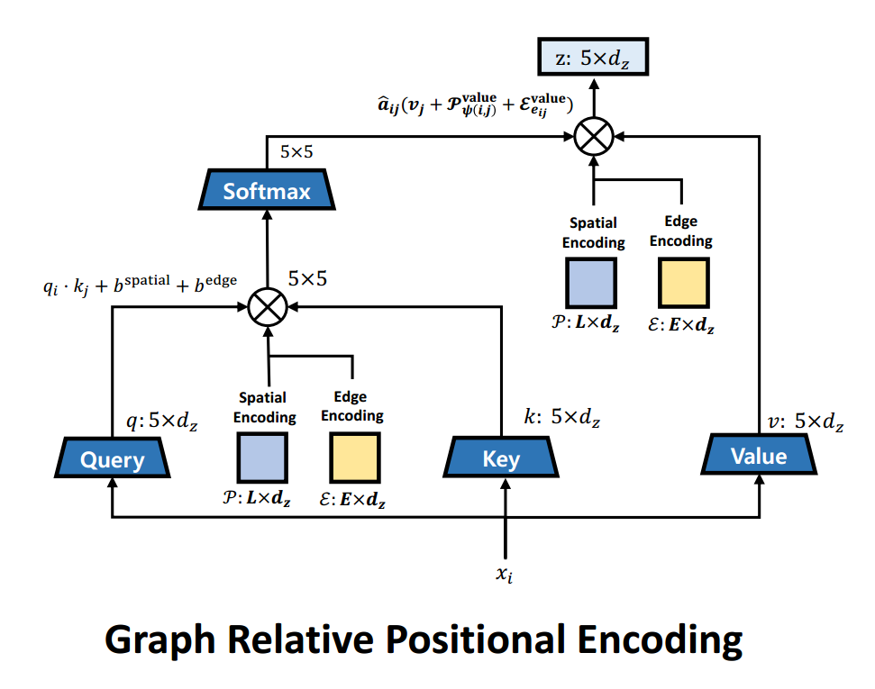
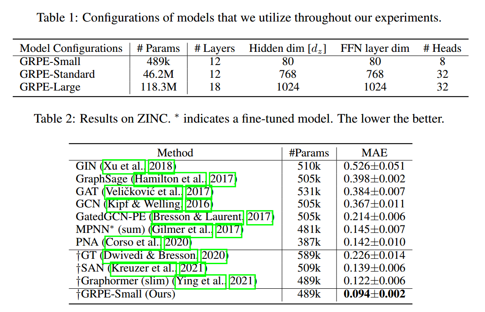
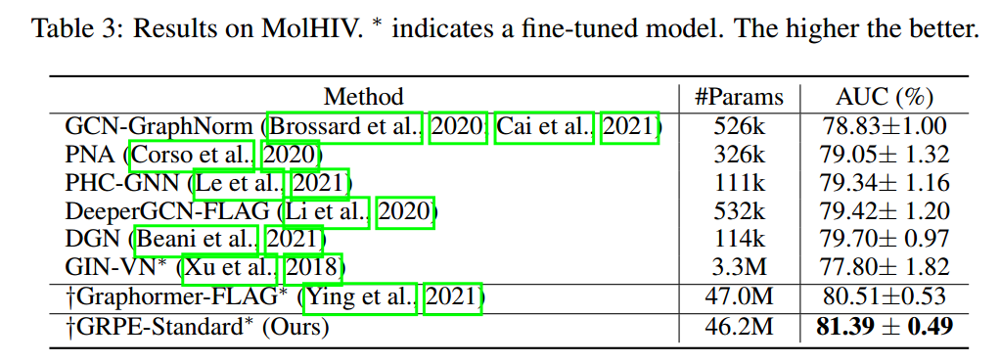
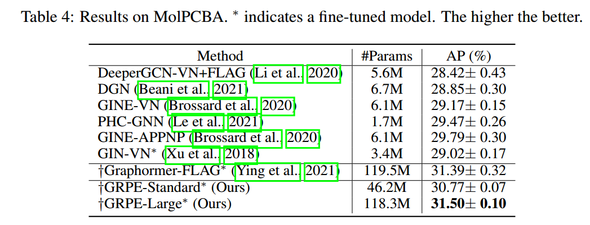

Graph Relative Positional Encoding
paper
icml
transformer
drug discovery
graph
Introduction
A Graph is a versatile data structure that can be thought of as representing relations(edges) between a set of objects(nodes). A transformer is an architecture that operates on sets. So can we use transformers to learn representations of graphs? Today we cover a paper from ICLR 2022 that does exactly this.
This paper and our post deals with molecular graphs as part of drug discovery pipelines. Here the task is to predict various properties of molecules like shape, reactivity etc. from their graph representations.
How To Process Graphs With Transformers?
To answer this, let’s review what we already know, how do transformers process text and images? Neither of them is a set. What do we mean when we say the transformer treats input data as a set?
Set Processing
- We present a simplified view of basic transformer encoder operation(self-attention mechanism) to explain the set processing aspect of the transformer. The actual operation involves extracting Query, Key, and Value(Q, K, V) information from input elements. Attention scores \(A_i\) and output \(z_i\) are calculated using Q, K, and V.
- When a transformer receives 10 input elements, it calculates for each element \(E_{i}\).
- Attention scores \([A_{i1}, A_{i2},...A_{ii},.... A_{i10}]\) w.r.t all elements including itself, attention \(A_{i1}\) signifies the amount of attention the model has to pay to the first element.
- Then the elements are combined \[\Large Z_i = \hat{A}_{i1} \cdot E_{1} + ..... + \hat{A}_{i10} \cdot E_{10} \]
- \([\hat{A}_{1}.... \hat{A}_{n}]\) signifies softmax operation on \([{A}_{1}.... {A}_{n}]\). This operation is performed multiple times in a transformer along with feed-forward and non-linearity operations on individual elements.
- Now, if you want to create a classifier out of this architecture,
- one can pass an extra dummy input element, let’s call it \(E_{cls}\), then we can pass the output \(z_{cls}\) through an MLP and use it as a classifier.
- Or, we can collect \([z_{1}, z_{2},...... z_{10}]\) and average them and pass the result through an MLP and use it as a classifier.
- If you look at the classifier we have designed above, altering the position of input elements from \([E_{1}, E_{2},.... E_{10}]\) to \([E_{10}, E_{9},.... E_{1}]\) makes no difference to the output(Think in terms of the operations performed on the input).
- The architecture essentially treats the input elements as if they contain all the information in their representation and not in any other aspect like their absolute or relative position in the input sequence.
- This is why we say the transformer treats the input as a set.
text Processing
- Text is a sequence, but not a set. Elements in a sequence have unique positional information associated with them. The position of a word carries useful information. e.g. “I am tall” and “am I tall” do not have the same meaning.
- We want our model to use this positional information, as it is important for the meaning of a sentence.
- W.K.T transformers treat the input sequence as a set. But transformers are quite famous in NLP, how are they processing text as sets?
- A Transformer believes all the information about each input element is present in the representation of the element. So explicitly add position information to the word representations. e.g. “I-1 am-2 tall-3”. This is a simplification. The exact way we do it is by superimposing position information on word representation. That is
embedding["tall"] = embedding["tall"] + embedding["3"]. - You can look at this post to further understand how the position information is added to the input representation.
- Now that we added position information to word representation, the transformer can treat the input like a set and still not lose the position information.
Image Processing
- Image is a 2 dimensional grid(grayscale), the two dimensions are along height and width.
- For an image of size say 100x100, we may split the image into 100 patches each of size 10x10 and convert the patches into embeddings(depth wise Convolution/linearize and dot product) and superimpose 2d positional information onto these embeddings and pass the sequence to the transformer.
Graph Processing
- In the text and image we saw that the funda was to destroy the structure of your input data and format it into a sequence of elements. Then identify the structural information that is essential for the task and add it to the representation of individual elements.
- We can ignore the graph structure and create a sequence by randomly ordering nodes in the graph. This gives us the sequence we needed.
- there is no notion of the ordering of nodes in a graph, so we can not add structural information to node embeddings based on the order.
- Graph nodes do not have absolute positional information, any node can be the first node. they have relative positional information e.g. nodes at 1, 2, 3… hops away from a node.
- When adding absolute positional information every element in the sequence has unique positional information added to it. But in relative positioning, the position of a node varies based on the node relative to which the measurement is taken. So if a graph has n nodes, each node has n relative position values 1 w.r.t each node in the graph.
- Since each element in the sequence has multiple relative position values it is not possible to add them all to the representation of the element. (Shaw, Uszkoreit, and Vaswani 2018) suggests the following modifications to the attention mechanism to incorporate the relative position information. \[\Large A_{ij} = \frac{x_{i}W^Q(x_jW^K+a_{ij}^K)^T}{\sqrt{d_z}}\] \[\Large z_i = \hat{A_{ij}}(x_jW^V+a_{ij}^V)\]
- \(\Large a_{ij}^K\) and \(\Large a_{ij}^V\) are learnt relative positional embeddings. key, value of components of \(\Large a_{ij}\) are learnt seperately to simplify computation.
- Recent work from (Park et al. 2022) shows that considering node-spatial, node-edge interactions when adding structural information improves the performance on drug property prediction tasks. They modify the attention mechanism as follows. \[\Large b_{ij}^{spatial} = q_i\mathcal{P}_{\psi(i,j)}^{query}+k_j\mathcal{P}_{\psi(i,j)}^{key}\] \[\Large b_{ij}^{edge} = q_i\mathcal{E}_{e_{ij}}^{query}+k_j\mathcal{E}_{e_{ij}}^{key}\] \[\Large A_{ij} = \frac{q_i \cdot k_j + b_{ij}^{spatial} + b_{ij}^{edge}}{\sqrt{d_z}}\] \[\Large z_i = \sum_{j=1}^{N} \hat{A}_{ij}(v_j+\mathcal{P}_{\psi(i,j)}^{value}+\mathcal{E}_{e_{ij}}^{value})\]
- Where \(\Large \psi(i,j)\) is the shortest path distance between the nodes i, j. \(\Large e_{ij}\) is the type of edge between node i, j(e.g: double bond, single bond etc). \(\Large \mathcal{P}\) is the spatial encoding(distance), \(\Large \mathcal{E}\) is the edge encoding(edge type). \(\Large b_{ij}^{spatial}\) captures spatial relation between two nodes while considering the node-spatial interaction. \(\Large b_{ij}^{edge}\) captures the edge between node i and j while considering node-edge interaction, the edge type was not considered by (Shaw, Uszkoreit, and Vaswani 2018). Both \(\Large \mathcal{P}\) and \(\Large \mathcal{E}\) are learnt during training.
- Attention modification visualized. 
- (Park et al. 2022) improves performance on various datasets.   
References
Park, Wonpyo, Woong-Gi Chang, Donggeon Lee, Juntae Kim, et al. 2022. “Grpe: Relative Positional Encoding for Graph Transformer.” In ICLR2022 Machine Learning for Drug Discovery.
Shaw, Peter, Jakob Uszkoreit, and Ashish Vaswani. 2018. “Self-Attention with Relative Position Representations.” arXiv Preprint arXiv:1803.02155.